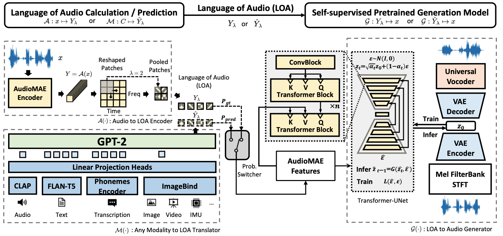
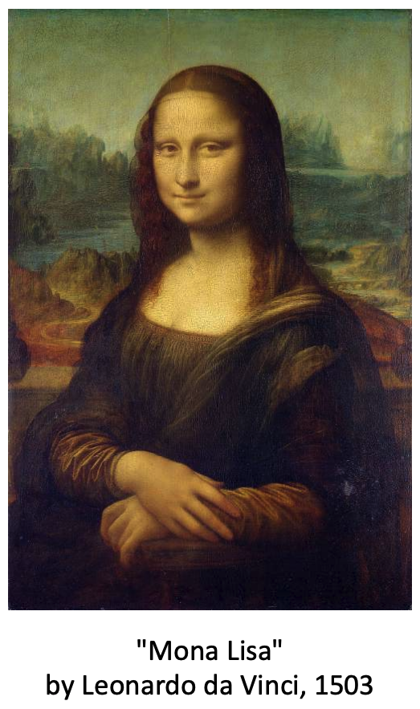
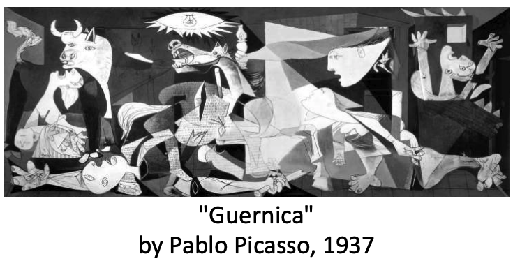
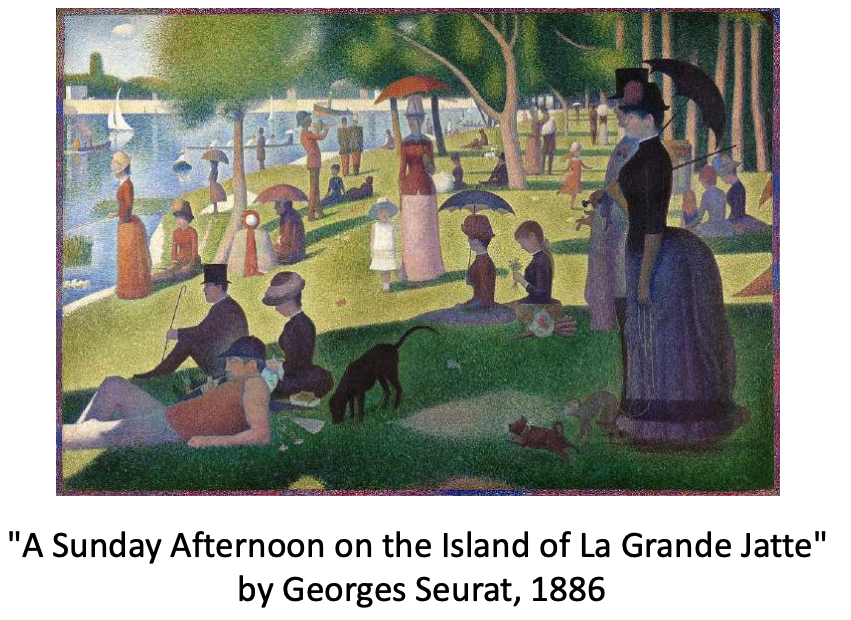

AudioLDM 2: A General Framework for Audio, Music, and Speech Generation
Haohe Liu 📮,1,2, Qiao Tian2,Yi Yuan1, Xubo Liu1, Xinhao Mei1,Qiuqiang Kong2
Yuping Wang2, Wenwu Wang1, Yuxuan Wang2, Mark D. Plumbley1
1CVSSP, University of Surrey, Guildford, UK
2Speech, Audio & Music Intelligence (SAMI), ByteDance
📮Corresponding author
|
😃 For text-to-audio generation, we generated a total of 350 audio files with prompts (generated by ChatGPT) without cherry-picking. You can download them here. |
|---|
Abstract
Although audio generation shares commonalities across different types of audio, such as speech, music, and sound effects, designing models for each type requires careful consideration of unique objectives and biases that can significantly differ from those of other types. To bring us closer to a unified perspective of audio generation, this paper proposes a framework that utilizes the same learning method for speech, music, and sound effect generation. Our framework introduces a generic representation of audio, which can be treated as a new "language of audio" and used as a proxy for audio generation. For any conditional input, we first translate it into the "language of audio" with a language model, followed by a model that performs audio synthesis with a latent diffusion model based on the audio language. The proposed framework naturally brings advantages such as a reusable self-supervised pretrained model and in-context learning abilities. Experiments on the major benchmarks of text-to-audio (TTA), text-to-music (TTM), and text-to-speech (TTS) demonstrate new state-of-the-art or competitive performance to previous approaches.
Note

Figure 1: The overview of the AudioLDM2 architecture. The AudioMAE feature is a proxy that bridges the audio semantic language model stage (GPT-2) and the semantic reconstruction stage (latent diffusion model). The probabilistic switcher controls the probability of the latent diffusion model using the ground truth AudioMAE ($P_{gt}$) and the GPT-2 generated AudioMAE feature ($P_{pred}$) as the condition.
Section 1. Text-prompted Audio Generation
Text prompts are generated by the ChatGPT. Audio files are generated by AudioLDM 2-Full.
| A dog is tail wagging happily. | A forest of wind chimes singing a soothing melody in the breeze. | A ghostly choir chanting hauntingly beautiful hymns. |
| Magical fairies laughter echoing through an enchanted forest. | Soft whispers of a bedtime story being told. | The AI is having a bad day. |
| the sound of a light saber. | The sound of dreams colliding, creating a surreal and wondrous composition. | The splashing of water in a pond. |
| A doorbell ringing to announce a guest. | A pencil scribbling on a notepad. | A sewing machine whirring as fabric is stitched. |
| A ticking clock on the wall. | An excited crowd cheering at a sports game. | Angry kids breaking glass in frustration. |
| Bees buzzing among colorful wildflowers. | Bells jingling as a horse-drawn carriage passes by. | Birds singing sweetly in a blooming garden. |
| Gentle waves lapping against the sandy shore. | Laughter and chatter at a lively party. | Space station docking with a ship featuring a strong steel alloy frame. |
Section 2. Text-prompted Music Generation
Text prompts are generated by the ChatGPT. Audio files are generated by AudioLDM 2-Full.
| A catchy trap beat with EDM Synthesizers in the mix. | A cheerful ukulele strumming in a beachside jam. | A funky bass guitar grooving in sync with drums. |
| A modern synthesizer creating futuristic soundscapes. | A traditional Irish fiddle playing a lively reel. | A traditional Japanese taiko drum ensemble, exuding power and precision. |
| A violin playing a heartfelt melody. | Musical constellations twinkling in the night sky. | The vibrant beat of Brazilian samba drums. |
| A beautiful jazz music made by piano. | A contemporary hip-hop beat with smooth rhymes and catchy hooks. | A fast-paced banjo picking in a bluegrass jam session. |
| A modern hip-hop beat with punchy bass and rapid-fire lyrics. | A reggae band jamming with a laid-back groove. | A saxophone playing a soulful melody. |
| A symphony of laughter, tears. | A traditional Irish fiddle playing a lively reel. | Award-winning melodic pop song. |
| Catchy trap beat with EDM synthesizers for a unique electronic sound. | Hitler is giving a speech about pure evil. | The energizing beats of an Indian dhol drum/ |
Section 3 Text-to-Speech Generation
LJSpeech Dataset
| Speech | Ground-Truth | AudioLDM2 | AudioMAE-restruction | FastSpeech2 |
|---|---|---|---|---|
| The prisoners were in due course transferred to Newgate, to be put upon their trial at the Central Criminal Court. | ||||
| Calcraft served the city of London till eighteen seventy-four, when he was pensioned at the rate of twenty-five shillings per week. |
| Speech | Ground-Truth | AudioLDM2 | AudioMAE-restruction | FastSpeech2 |
|---|---|---|---|---|
| The preference given to the Pentonville system destroyed all hopes of a complete reformation of Newgate. | ||||
| They should not be confused with slowness, indecision or fear. Only the intellectually fearless could even be remotely attracted to our doctrine. | ||||
| In eighteen ninety-four, |
GigaSpeech Dataset
- We demonstrate in-context learning with samples from GigaSpeech Dataset.
- The first 2.5 seconds are groundtruth (context for model), the speech after a short beep are generated speech (by AudioLDM 2).
| Text | Ground-Truth | AudioLDM2 |
|---|---|---|
| Jen says sesame street has improved over time in how it depicts apologies on the show. | ||
| But the researchers found that the moms of the helper kids those one in three who ran to help they were different. |
| Text | Ground-Truth | AudioLDM2 |
|---|---|---|
| Well, if you want to really grow kind people, there's a lot you can do when things are good, when you are full of joy. | And it was hurting my feelings and then when you shared it made me feel better. | |
| So in that interaction you're giving children a lot of language to describe how they're feeling. | ||
| When one child hurt another many of the mothers responded with something casual and bland. | ||
| If anything scarlett talks even more about the other side of an apology forgiveness. | ||
| Aija simmons helps run the social and emotional programs for schools in oakland, california. |
Section 4 Image-to-Audio Generation
|  |
 |
 |
|---|---|---|
|
|
|
|
 |
||
|
|
|
|
Acknowledgement
This research was partly supported by the British Broadcasting Corporation Research and Development (BBC R&D), Engineering and Physical Sciences Research Council (EPSRC) Grant EP/T019751/1 "AI for Sound", and a PhD scholarship from the Centre for Vision, Speech and Signal Processing (CVSSP), Faculty of Engineering and Physical Science (FEPS), University of Surrey. For the purpose of open access, the authors have applied a Creative Commons Attribution (CC BY) license to any Author Accepted Manuscript version arising. We would like to thank Tang Li, Ke Chen, Yusong Wu, and Jinhua Liang for their support and discussions.Page updated on 31 July 2023